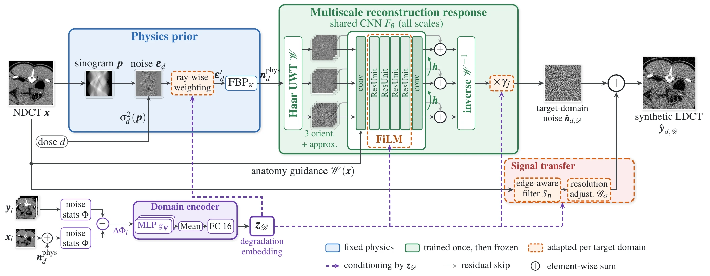

⇔
Drag the divider or use the arrow keys. All images show the same Norsvin IR test slice; “Real LDCT” is the scanner's own low-dose acquisition.
window [−100, 200] HU
Physics-grounded multiscale degradation learning for few-shot adaptive low-dose CT synthesis
Drag the divider or use the arrow keys. All images show the same Norsvin IR test slice; “Real LDCT” is the scanner's own low-dose acquisition.
window [−100, 200] HU
Simulating low-dose CT (LDCT) from normal-dose acquisitions is needed to develop and evaluate dose-reduction methods, but the noise of a real LDCT image depends on the scanner and, above all, on its reconstruction algorithm. Image-domain generative models learn this appearance from data for each dose and each scanner, and they do not transfer to a new reconstruction.
PhysReCon-LDCT separates what physics determines from what must be learned. Dose-dependent projection noise is generated on the sinogram and reconstructed by filtered back-projection. A 0.23 M-parameter network, shared across the scales of an undecimated wavelet transform and guided by the anatomy, learns how a given reconstruction transforms this noise. A degradation embedding estimated from paired support slices conditions the transformation, so that adapting to a new domain updates only 28 k parameters.
On pig CT reconstructed with iterative reconstruction at 10 % and 25 % dose, PhysReCon-LDCT trained on the target scanner gives the lowest noise-level error, HU bias and LPIPS at 10 % among models trained on the same data, and the best result on four of five metrics at 25 %. Among models trained on a different dataset and transferred to this one, the adapted PhysReCon-LDCT has the lowest NPS errors at both doses.

Blue: fixed physics. Green: trained once on the source domain, then frozen. Dashed orange: adapted per target domain. Purple: conditioning by the degradation embedding z𝒟.
Incremental dose noise εd ~ 𝒩(0, σ²d(p)) is drawn on the sinogram of the normal-dose image, re-weighted ray-wise and reconstructed by FBP. Only the noise is reconstructed. I0, σe² and the FBP kernel are calibrated once on piglet FBP data.
An undecimated Haar transform splits the physics noise into 3 scales × 3 orientations. One CNN with weights shared across scales (conv, four FiLM-modulated residual units, conv; dilation 2j) corrects every band, coarse to fine, guided by the NDCT subbands. Band gains γj then rescale the corrected noise.
An edge-aware filter Sη followed by a resolution adjustment 𝒢σ reproduces the contrast and sharpness of the target reconstruction. Signal and noise stay on separate paths and are added at the end.
For each paired support slice, the noise statistics of the real LDCT are compared with those of NDCT + physics noise (ΔΦi). A permutation-invariant encoder (MLP, mean, FC 16) turns them into z𝒟, which conditions every adapted module.
Every loss term compares statistics of the synthetic image with real LDCT: tissue-wise NPS, multiscale covariance, texture sliced-Wasserstein distance and signal transfer. No pixel loss is computed between independent noise realizations. Loss weights were fixed a priori and not tuned.
One evaluation for all methods, 282 test slices per dose, real LDCT as reference. Errors: lower is better. Choose a metric and a dose; bars are grouped by training data.
NPSe: NPS magnitude error; NPSs: NPS shape error; σe: noise-level error; HU: absolute HU bias; LP: LPIPS. Best per block in green. Baselines trained on Norsvin are trained from scratch, one model per dose. Zero-shot rows are applied to Norsvin unchanged; the few-shot row updates ≈28 k parameters using the Norsvin training pigs.
Trained on the same target data, PhysReCon-LDCT has the lowest noise-level error, HU bias and LPIPS at 10 %, and the best result on four of five metrics at 25 %. PhysHVS-LDCT keeps the best NPS at 10 %. Transferred from piglet without adaptation, PhysHVS-LDCT shows a 45 HU bias and PhysReCon an NPS error about 30 times larger than after adaptation. The adapted PhysReCon has the lowest NPS errors of the transferred models, comparable to the model trained on Norsvin from scratch (better at 25 %), but a larger noise-level error and HU bias at 10 %.
ASIR40 is never seen during source training. Support units are blocks of 10 consecutive slices from the training part; k = 0 is zero-shot. Points show the mean over 2 random draws of the support set, bars the range ±1 s.d.
Controlled ablation: the same source checkpoint, the same adaptation protocol (600 steps, early stopping on a held-out support pig) and 3 seeds for every configuration. Dots show the mean, lines ±1 s.d.
Norsvin IR test slice. Click an image to enlarge it.
@inproceedings{taifour2026physrecon,
title = {PhysReCon-LDCT: Physics-Grounded Multiscale Degradation Learning
for Few-Shot Adaptive Low-Dose CT Synthesis},
author = {Taifour, Yousra and others},
booktitle = {IEEE International Symposium on Biomedical Imaging (ISBI)},
year = {2026},
note = {under review}
}